import warnings
warnings.filterwarnings('ignore')
import jetset
print(jetset.__version__)
1.4.0rc3
Model fitting 3: External Compton#
Loading data#
see the Data format and SED data user guide for further information about loading data and `External Compton <#toc0_>`__ for the information regarding the implementation of the external Conpton model
from jetset.data_loader import Data,ObsData
from jetset.test_data_helper import test_SEDs
test_SEDs
['/Users/orion/miniforge3/envs/jetset/lib/python3.12/site-packages/jetset/test_data/SEDs_data/SED_3C345.ecsv',
'/Users/orion/miniforge3/envs/jetset/lib/python3.12/site-packages/jetset/test_data/SEDs_data/SED_MW_Mrk421_EBL_DEABS.ecsv',
'/Users/orion/miniforge3/envs/jetset/lib/python3.12/site-packages/jetset/test_data/SEDs_data/SED_MW_Mrk501_EBL_ABS.ecsv',
'/Users/orion/miniforge3/envs/jetset/lib/python3.12/site-packages/jetset/test_data/SEDs_data/SED_MW_Mrk501_EBL_DEABS.ecsv']
data=Data.from_file(test_SEDs[0])
t=data.table[data.table['dataset']!='-1']
t=t[t['dataset']!='2']
t.write('~/3C454.3.ecsv',overwrite=True)
sed_data=ObsData(data_table=data)
%matplotlib inline
p=sed_data.plot_sed(show_dataset=True)
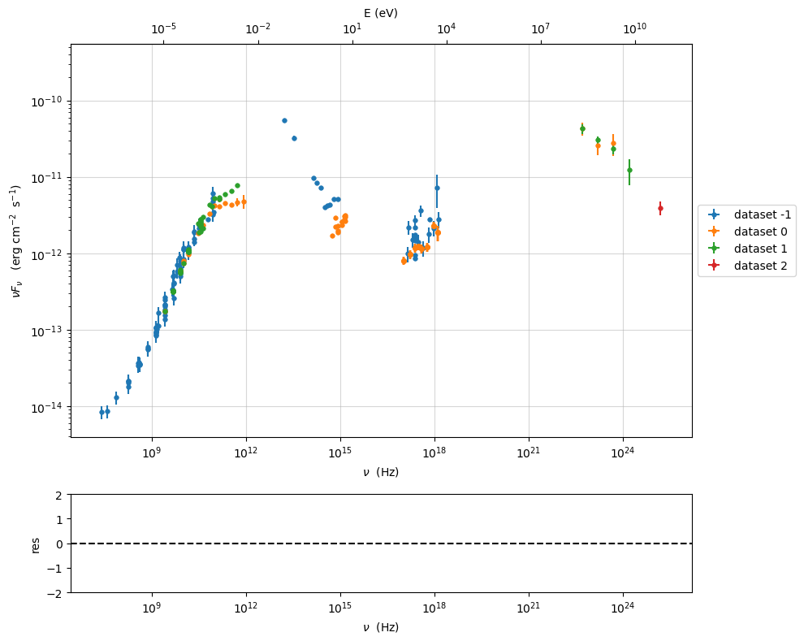
we filter out the data set -1
sed_data.show_data_sets()
sed_data.filter_data_set('-1',exclude=True)
sed_data.filter_data_set('2',exclude=True)
sed_data.show_data_sets()
p=sed_data.plot_sed()
current datasets
dataset -1
dataset 0
dataset 1
dataset 2
---> excluding dataset/s ['-1']
filter -1 192
current datasets
dataset 0
dataset 1
dataset 2
---> data sets left after filtering None
---> data len after filtering=192
---> excluding dataset/s ['2']
filter 2 191
current datasets
dataset 0
dataset 1
---> data sets left after filtering None
---> data len after filtering=191
current datasets
dataset 0
dataset 1
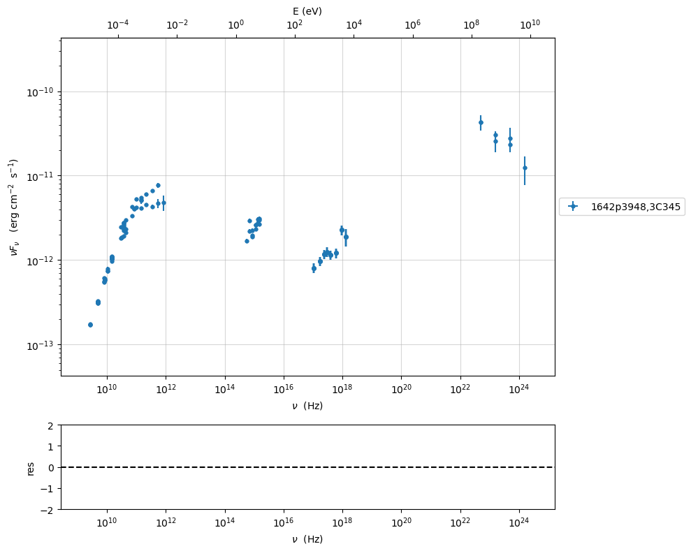
sed_data.data.write('~/3C454.3.ecsv',overwrite=True)
sed_data.group_data(bin_width=.15)
sed_data.add_systematics(0.1,[10.**6,10.**29])
#sed_data.add_systematics(0.05,[10.**19,10.**30])
p=sed_data.plot_sed()
================================================================================ * binning data * ---> N bins= 98 ---> bin_width= 0.15 ================================================================================
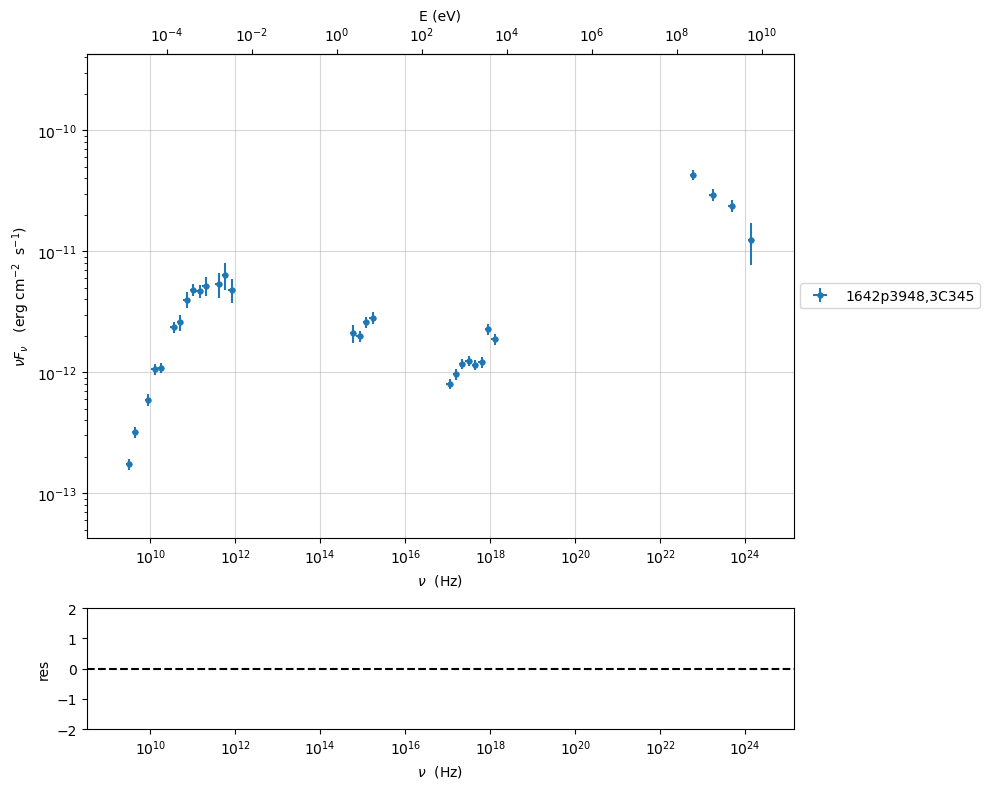
sed_data.save('3C454_data.pkl')
Phenomenological model constraining#
see the Phenomenological model constraining: application user guide for further information about phenomenological model constraining
from jetset.sed_shaper import SEDShape
my_shape=SEDShape(sed_data)
my_shape.eval_indices(silent=True)
p=my_shape.plot_indices()
p.setlim(y_min=1E-15,y_max=1E-9)
================================================================================ * evaluating spectral indices for data * ================================================================================
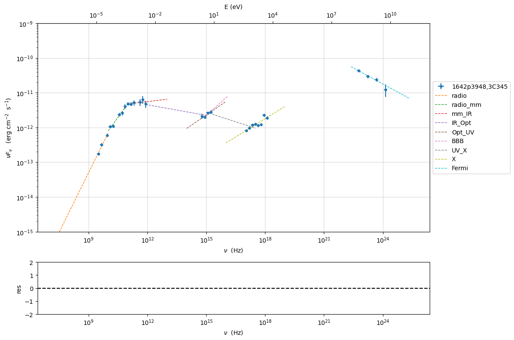
for the synchrotron sed_shaping we include the check for Big Blue Bump
(BBB) component. Moreover, we force the model to use a pure
log-parabolic function and not a log-cubic one in order to get a better
estimation of the BBB component. The fit values of the BBB component
will be used in the ObsConstrain to guess the accretion disk
luminosity and temperature
mm,best_fit=my_shape.sync_fit(check_BBB_template=True,
check_host_gal_template=False,
use_log_par=True,
Ep_start=None,
minimizer='lsb',
silent=True,
fit_range=[9,16])
================================================================================ * Log-Polynomial fitting of the synchrotron component * ---> first blind fit run, fit range: [9, 16] --> class: LSP --> class: LSPTable length=5
| model name | name | val | bestfit val | err + | err - | start val | fit range min | fit range max | frozen |
|---|---|---|---|---|---|---|---|---|---|
| LogParabolaEp | b | -3.175784e-01 | -3.175784e-01 | 3.360071e-02 | -- | -1.560612e-01 | -1.000000e+01 | 0.000000e+00 | False |
| LogParabolaEp | Ep | 1.167956e+01 | 1.167956e+01 | 1.276551e-01 | -- | 1.286767e+01 | 0.000000e+00 | 3.000000e+01 | False |
| LogParabolaEp | Sp | -1.123620e+01 | -1.123620e+01 | 4.508175e-02 | -- | -1.087583e+01 | -3.000000e+01 | 0.000000e+00 | False |
| BBB | nuFnu_p_BBB | -1.156569e+01 | -1.156569e+01 | 2.922622e-02 | -- | -1.087583e+01 | -1.287583e+01 | -8.875830e+00 | False |
| BBB | nu_scale | 8.865061e-03 | 8.865061e-03 | 3.068053e-03 | -- | 0.000000e+00 | -5.000000e-01 | 5.000000e-01 | False |
---> sync nu_p=+1.167956e+01 (err=+1.276551e-01) nuFnu_p=-1.123620e+01 (err=+4.508175e-02) curv.=-3.175784e-01 (err=+3.360071e-02)
================================================================================
my_shape.IC_fit(fit_range=[16,26],minimizer='minuit', silent=True)
p=my_shape.plot_shape_fit()
p.setlim(y_min=1E-15)
================================================================================ * Log-Polynomial fitting of the IC component * ---> fit range: [16, 26] ---> LogCubic fitTable length=4
| model name | name | val | bestfit val | err + | err - | start val | fit range min | fit range max | frozen |
|---|---|---|---|---|---|---|---|---|---|
| LogCubic | b | -1.331773e-01 | -1.331773e-01 | 1.456625e-02 | -- | -1.000000e+00 | -1.000000e+01 | 0.000000e+00 | False |
| LogCubic | c | -1.352785e-02 | -1.352785e-02 | 2.463746e-03 | -- | -1.000000e+00 | -1.000000e+01 | 1.000000e+01 | False |
| LogCubic | Ep | 2.230023e+01 | 2.230023e+01 | 1.126805e-01 | -- | 2.228823e+01 | 0.000000e+00 | 3.000000e+01 | False |
| LogCubic | Sp | -1.035586e+01 | -1.035586e+01 | 5.102578e-02 | -- | -1.000000e+01 | -3.000000e+01 | 0.000000e+00 | False |
---> IC nu_p=+2.230023e+01 (err=+1.126805e-01) nuFnu_p=-1.035586e+01 (err=+5.102578e-02) curv.=-1.331773e-01 (err=+1.456625e-02)
================================================================================
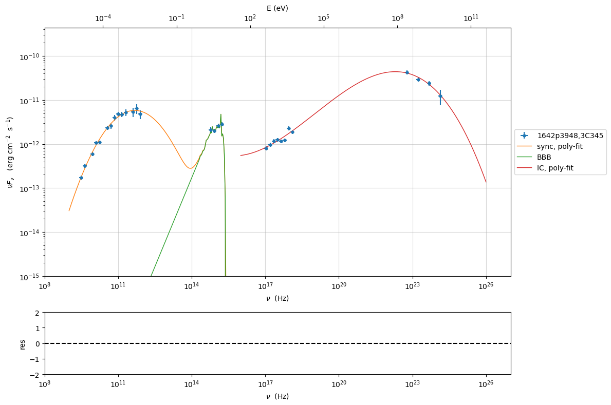
In this case we use the constrain_SSC_EC_model, and we ask to use a
dusty torus and BLR component external component
read the section `External Compton <#toc0_>`__ for more information regarding the EC model
from jetset.obs_constrain import ObsConstrain
from jetset.minimizer import fit_SED
sed_obspar=ObsConstrain(B_range=[0.1,0.2],
distr_e='bkn',
t_var_sec=15*86400,
nu_cut_IR=1E9,
theta=2,
bulk_factor=20,
SEDShape=my_shape)
prefit_jet=sed_obspar.constrain_SSC_EC_model(electron_distribution_log_values=False,EC_components_list=['EC_DT','EC_BLR'],R_H=2E18,silent=True,)
================================================================================ * constrains parameters from observable * adding par: L_Disk to R_BLR_in ==> par R_BLR_in is depending on ['L_Disk'] according to expr: R_BLR_in = 3E17*(L_Disk/1E46)**0.5 adding par: R_BLR_in to R_BLR_out ==> par R_BLR_out is depending on ['R_BLR_in'] according to expr: R_BLR_out = R_BLR_in*1.1 adding par: L_Disk to R_DT ==> par R_DT is depending on ['L_Disk'] according to expr: R_DT = 2E19*(L_Disk/1E46)**0.5Table length=21
| model name | name | par type | units | val | phys. bound. min | phys. bound. max | log | frozen |
|---|---|---|---|---|---|---|---|---|
| jet_leptonic | R | region_size | cm | 6.764638e+16 | 1.000000e+03 | 1.000000e+30 | False | False |
| jet_leptonic | R_H | region_position | cm | 2.000000e+18 | 0.000000e+00 | -- | False | True |
| jet_leptonic | B | magnetic_field | gauss | 1.500000e-01 | 0.000000e+00 | -- | False | False |
| jet_leptonic | NH_cold_to_rel_e | cold_p_to_rel_e_ratio | 1.000000e+00 | 0.000000e+00 | -- | False | True | |
| jet_leptonic | theta | jet-viewing-angle | deg | 2.000000e+00 | 0.000000e+00 | 9.000000e+01 | False | False |
| jet_leptonic | BulkFactor | jet-bulk-factor | lorentz-factor* | 2.000000e+01 | 1.000000e+00 | 1.000000e+05 | False | False |
| jet_leptonic | z_cosm | redshift | 5.930000e-01 | 0.000000e+00 | -- | False | False | |
| jet_leptonic | gmin | low-energy-cut-off | lorentz-factor* | 1.033091e+01 | 1.000000e+00 | 1.000000e+09 | False | False |
| jet_leptonic | gmax | high-energy-cut-off | lorentz-factor* | 1.351959e+04 | 1.000000e+00 | 1.000000e+15 | False | False |
| jet_leptonic | N | emitters_density | 1 / cm3 | 1.145713e+03 | 0.000000e+00 | -- | False | False |
| jet_leptonic | gamma_break | turn-over-energy | lorentz-factor* | 2.259008e+02 | 1.000000e+00 | 1.000000e+09 | False | False |
| jet_leptonic | p | LE_spectral_slope | 2.301767e+00 | -1.000000e+01 | 1.000000e+01 | False | False | |
| jet_leptonic | p_1 | HE_spectral_slope | 3.500000e+00 | -1.000000e+01 | 1.000000e+01 | False | False | |
| jet_leptonic | T_DT | DT | K | 1.000000e+02 | 0.000000e+00 | -- | False | False |
| jet_leptonic | *R_DT(D,L_Disk) | DT | cm | 1.292162e+19 | 0.000000e+00 | -- | False | True |
| jet_leptonic | tau_DT | DT | 1.000000e-01 | 0.000000e+00 | 1.000000e+00 | False | False | |
| jet_leptonic | tau_BLR | BLR | 1.000000e-01 | 0.000000e+00 | 1.000000e+00 | False | False | |
| jet_leptonic | *R_BLR_in(D,L_Disk) | BLR | cm | 1.938243e+17 | 0.000000e+00 | -- | False | True |
| jet_leptonic | *R_BLR_out(D,R_BLR_in) | BLR | cm | 2.132067e+17 | 0.000000e+00 | -- | False | True |
| jet_leptonic | L_Disk(M) | Disk | erg / s | 4.174205e+45 | 0.000000e+00 | -- | False | False |
| jet_leptonic | T_Disk | Disk | K | 3.018434e+04 | 0.000000e+00 | -- | False | False |
================================================================================
prefit_jet.eval()
p=prefit_jet.plot_model(sed_data=sed_data)
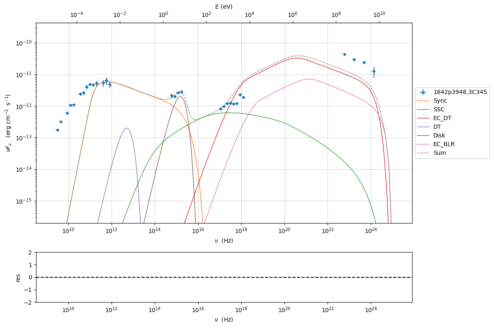
prefit_jet.make_conical_jet(theta_open=5)
adding par: R_H to R
adding par: theta_open to R
==> par R is depending on ['R_H', 'theta_open'] according to expr: R =
np.tan(np.radians(theta_open))*R_H
setting R_H to 7.732016219800707e+17
prefit_jet.set_EC_dependencies()
==> par R_BLR_in is depending on ['L_Disk'] according to expr: R_BLR_in =
3E17*(L_Disk/1E46)**0.5
==> par R_BLR_out is depending on ['R_BLR_in'] according to expr: R_BLR_out =
R_BLR_in*1.1
==> par R_DT is depending on ['L_Disk'] according to expr: R_DT =
2E19*(L_Disk/1E46)**0.5
prefit_jet.set_external_field_transf('disk')
prefit_jet.eval()
p=prefit_jet.plot_model(sed_data=sed_data)
prefit_jet.save_model('prefit_jet_EC.pkl')
The prefit model should works well for the synchrotron component, but
the EC one is a bit problematic. We can set as starting values a
slightly harder value of p, and a larger value of gamma_break
and gmax. We freeze some parameters, and we also set some
fit_range values. Setting fit_range can speed-up the fit convergence
but should be judged by the user each time according to the physics of
the particular source
EC model fit#
Note
Please, read the introduction and the caveats for the frequentist model fitting to understand the frequentist fitting workflow
see the Composite Models and depending pars user guide for further information about the implementation of FitModel, in particular for parameter setting
from jetset.data_loader import ObsData
sed_data=ObsData.load('3C454_data.pkl')
from jetset.jet_model import Jet
from jetset.model_manager import FitModel
jet=Jet.load_model('prefit_jet_EC.pkl')
jet.set_gamma_grid_size(100)
fit_model=FitModel( jet=jet, name='EC-best-fit-lsb')
fit_model.show_model_components()
--------------------------------------------------------------------------------
Composite model description
--------------------------------------------------------------------------------
name: EC-best-fit-lsb
type: composite_model
components models:
-model name: jet_leptonic model type: jet
--------------------------------------------------------------------------------
Setting the fit range for the model parameters#
fit_model.freeze('jet_leptonic','z_cosm')
fit_model.freeze('jet_leptonic','theta')
fit_model.free('jet_leptonic','R_H')
fit_model.freeze('jet_leptonic','L_Disk')
fit_model.freeze('jet_leptonic','tau_DT')
fit_model.freeze('jet_leptonic','tau_BLR')
fit_model.jet_leptonic.parameters.R_H.fit_range=[5E17,5E19]
fit_model.jet_leptonic.parameters.T_Disk.fit_range=[1E4,1E5]
fit_model.jet_leptonic.parameters.T_DT.fit_range=[100,1000]
fit_model.jet_leptonic.parameters.gamma_break.fit_range=[100,500]
fit_model.jet_leptonic.parameters.gmin.fit_range=[2,100]
fit_model.jet_leptonic.parameters.gmax.fit_range=[1E4,1E5]
fit_model.jet_leptonic.parameters.B.fit_range=[1E-2,1]
fit_model.jet_leptonic.parameters.p.fit_range=[1,2.5]
fit_model.jet_leptonic.parameters.p_1.fit_range=[3,4]
fit_model.jet_leptonic.parameters.theta_open.fit_range=[4,6]
fit_model.jet_leptonic.parameters.BulkFactor.fit_range=[10,30]
How to enable Internal absorption#
If you want to enable the DT absorption, you can use this
instruction
fit_model.jet_leptonic.enable_internal_absorption('DT')
Please read the tutorial Internal absorption for more information on the internal absorption.
fit_model.jet_leptonic.enable_internal_absorption('DT',use_R_H_profile_extrapolation=True)
Run the fit#
from jetset.minimizer import ModelMinimizer
model_minimizer=ModelMinimizer('minuit')
best_fit=model_minimizer.fit(fit_model,sed_data,3E10,1E29,fitname='EC-best-fit-lsb',repeat=2)
filtering data in fit range = [3.000000e+10,1.000000e+29] data length 25 ================================================================================ * start fit process * ----- fit run: 0
0it [00:00, ?it/s]
- best chisq=8.02038e+01
fit run: 1
- old chisq=8.02038e+01
0it [00:00, ?it/s]
- best chisq=4.17928e+01
-------------------------------------------------------------------------
Fit report
Model: EC-best-fit-lsb
| model name | name | par type | units | val | phys. bound. min | phys. bound. max | log | frozen |
|---|---|---|---|---|---|---|---|---|
| jet_leptonic | gmin | low-energy-cut-off | lorentz-factor* | 2.031418e+00 | 1.000000e+00 | 1.000000e+09 | False | False |
| jet_leptonic | gmax | high-energy-cut-off | lorentz-factor* | 4.613736e+04 | 1.000000e+00 | 1.000000e+15 | False | False |
| jet_leptonic | N | emitters_density | 1 / cm3 | 1.651080e+02 | 0.000000e+00 | -- | False | False |
| jet_leptonic | gamma_break | turn-over-energy | lorentz-factor* | 2.370238e+02 | 1.000000e+00 | 1.000000e+09 | False | False |
| jet_leptonic | p | LE_spectral_slope | 1.674564e+00 | -1.000000e+01 | 1.000000e+01 | False | False | |
| jet_leptonic | p_1 | HE_spectral_slope | 3.521923e+00 | -1.000000e+01 | 1.000000e+01 | False | False | |
| jet_leptonic | T_DT | DT | K | 9.676089e+02 | 0.000000e+00 | -- | False | False |
| jet_leptonic | *R_DT(D,L_Disk) | DT | cm | 1.292162e+19 | 0.000000e+00 | -- | False | True |
| jet_leptonic | tau_DT | DT | 1.000000e-01 | 0.000000e+00 | 1.000000e+00 | False | True | |
| jet_leptonic | tau_BLR | BLR | 1.000000e-01 | 0.000000e+00 | 1.000000e+00 | False | True | |
| jet_leptonic | *R_BLR_in(D,L_Disk) | BLR | cm | 1.938243e+17 | 0.000000e+00 | -- | False | True |
| jet_leptonic | *R_BLR_out(D,R_BLR_in) | BLR | cm | 2.132067e+17 | 0.000000e+00 | -- | False | True |
| jet_leptonic | L_Disk(M) | Disk | erg / s | 4.174205e+45 | 0.000000e+00 | -- | False | True |
| jet_leptonic | T_Disk | Disk | K | 2.906549e+04 | 0.000000e+00 | -- | False | False |
| jet_leptonic | *R(D,theta_open) | region_size | cm | 3.994574e+17 | 1.000000e+03 | 1.000000e+30 | False | True |
| jet_leptonic | R_H(M) | region_position | cm | 3.812604e+18 | 0.000000e+00 | -- | False | False |
| jet_leptonic | B | magnetic_field | gauss | 5.606196e-02 | 0.000000e+00 | -- | False | False |
| jet_leptonic | NH_cold_to_rel_e | cold_p_to_rel_e_ratio | 1.000000e+00 | 0.000000e+00 | -- | False | True | |
| jet_leptonic | theta | jet-viewing-angle | deg | 2.000000e+00 | 0.000000e+00 | 9.000000e+01 | False | True |
| jet_leptonic | BulkFactor | jet-bulk-factor | lorentz-factor* | 1.000000e+01 | 1.000000e+00 | 1.000000e+05 | False | False |
| jet_leptonic | z_cosm | redshift | 5.930000e-01 | 0.000000e+00 | -- | False | True | |
| jet_leptonic | theta_open(M) | user_defined | deg | 5.981220e+00 | 1.000000e+00 | 1.000000e+01 | False | False |
converged=True
calls=5220
mesg=
| Migrad | |
|---|---|
| FCN = 41.79 | Nfcn = 5220 |
| EDM = 4.28e+03 (Goal: 0.0002) | time = 18.8 sec |
| INVALID Minimum | ABOVE EDM threshold (goal x 10) |
| SOME parameters at limit | Below call limit |
| Hesse ok | Covariance FORCED pos. def. |
| Name | Value | Hesse Error | Minos Error- | Minos Error+ | Limit- | Limit+ | Fixed | |
|---|---|---|---|---|---|---|---|---|
| 0 | par_0 | 2.03 | 0.07 | 2 | 100 | |||
| 1 | par_1 | 46.1e3 | 0.9e3 | 1E+04 | 1E+05 | |||
| 2 | par_2 | 165.11 | 0.05 | 0 | ||||
| 3 | par_3 | 237 | 13 | 100 | 500 | |||
| 4 | par_4 | 1.67 | 0.04 | 1 | 2.5 | |||
| 5 | par_5 | 3.521923 | 0.000006 | 3 | 4 | |||
| 6 | par_6 | 968 | 19 | 100 | 1E+03 | |||
| 7 | par_7 | 29.1e3 | 2.1e3 | 1E+04 | 1E+05 | |||
| 8 | par_8 | 3.81e18 | 0.07e18 | 5E+17 | 5E+19 | |||
| 9 | par_9 | 0.0561 | 0.0017 | 0.01 | 1 | |||
| 10 | par_10 | 10.00 | 0.08 | 10 | 30 | |||
| 11 | par_11 | 5.98122 | 0.00007 | 4 | 6 |
dof=13
chisq=41.792839, chisq/red=3.214834 null hypothesis sig=0.000071
best fit pars
| model name | name | val | bestfit val | err + | err - | start val | fit range min | fit range max | frozen |
|---|---|---|---|---|---|---|---|---|---|
| jet_leptonic | gmin | 2.031418e+00 | 2.031418e+00 | 6.983867e-02 | -- | 1.033091e+01 | 2.000000e+00 | 1.000000e+02 | False |
| jet_leptonic | gmax | 4.613736e+04 | 4.613736e+04 | 8.641882e+02 | -- | 1.351959e+04 | 1.000000e+04 | 1.000000e+05 | False |
| jet_leptonic | N | 1.651080e+02 | 1.651080e+02 | 4.855589e-02 | -- | 1.145713e+03 | 0.000000e+00 | -- | False |
| jet_leptonic | gamma_break | 2.370238e+02 | 2.370238e+02 | 1.331828e+01 | -- | 2.259008e+02 | 1.000000e+02 | 5.000000e+02 | False |
| jet_leptonic | p | 1.674564e+00 | 1.674564e+00 | 3.874000e-02 | -- | 2.301767e+00 | 1.000000e+00 | 2.500000e+00 | False |
| jet_leptonic | p_1 | 3.521923e+00 | 3.521923e+00 | 5.577788e-06 | -- | 3.500000e+00 | 3.000000e+00 | 4.000000e+00 | False |
| jet_leptonic | T_DT | 9.676089e+02 | 9.676089e+02 | 1.909581e+01 | -- | 1.000000e+02 | 1.000000e+02 | 1.000000e+03 | False |
| jet_leptonic | *R_DT(D,L_Disk) | 1.292162e+19 | -- | -- | -- | 1.292162e+19 | 0.000000e+00 | -- | True |
| jet_leptonic | tau_DT | 1.000000e-01 | -- | -- | -- | 1.000000e-01 | 0.000000e+00 | 1.000000e+00 | True |
| jet_leptonic | tau_BLR | 1.000000e-01 | -- | -- | -- | 1.000000e-01 | 0.000000e+00 | 1.000000e+00 | True |
| jet_leptonic | *R_BLR_in(D,L_Disk) | 1.938243e+17 | -- | -- | -- | 1.938243e+17 | 0.000000e+00 | -- | True |
| jet_leptonic | *R_BLR_out(D,R_BLR_in) | 2.132067e+17 | -- | -- | -- | 2.132067e+17 | 0.000000e+00 | -- | True |
| jet_leptonic | L_Disk(M) | 4.174205e+45 | -- | -- | -- | 4.174205e+45 | 0.000000e+00 | -- | True |
| jet_leptonic | T_Disk | 2.906549e+04 | 2.906549e+04 | 2.058546e+03 | -- | 3.018434e+04 | 1.000000e+04 | 1.000000e+05 | False |
| jet_leptonic | *R(D,theta_open) | 3.994574e+17 | -- | -- | -- | 6.764638e+16 | 1.000000e+03 | 1.000000e+30 | True |
| jet_leptonic | R_H(M) | 3.812604e+18 | 3.812604e+18 | 6.806606e+16 | -- | 7.732016e+17 | 5.000000e+17 | 5.000000e+19 | False |
| jet_leptonic | B | 5.606196e-02 | 5.606196e-02 | 1.666465e-03 | -- | 1.500000e-01 | 1.000000e-02 | 1.000000e+00 | False |
| jet_leptonic | NH_cold_to_rel_e | 1.000000e+00 | -- | -- | -- | 1.000000e+00 | 0.000000e+00 | -- | True |
| jet_leptonic | theta | 2.000000e+00 | -- | -- | -- | 2.000000e+00 | 0.000000e+00 | 9.000000e+01 | True |
| jet_leptonic | BulkFactor | 1.000000e+01 | 1.000000e+01 | 7.639654e-02 | -- | 2.000000e+01 | 1.000000e+01 | 3.000000e+01 | False |
| jet_leptonic | z_cosm | 5.930000e-01 | -- | -- | -- | 5.930000e-01 | 0.000000e+00 | -- | True |
| jet_leptonic | theta_open(M) | 5.981220e+00 | 5.981220e+00 | 6.976719e-05 | -- | 5.000000e+00 | 4.000000e+00 | 6.000000e+00 | False |
-------------------------------------------------------------------------
================================================================================
p=model_minimizer.plot_corr_matrix()
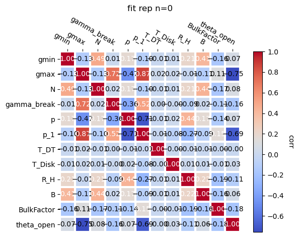
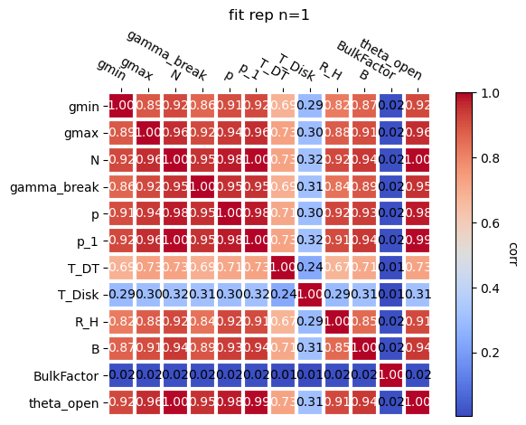
%matplotlib inline
fit_model.set_nu_grid(1E6,1E30,200)
fit_model.eval()
p2=fit_model.plot_model(sed_data=sed_data)
p2.setlim(y_min=1E-14,y_max=1E-9,x_min=1E6,x_max=2E28)
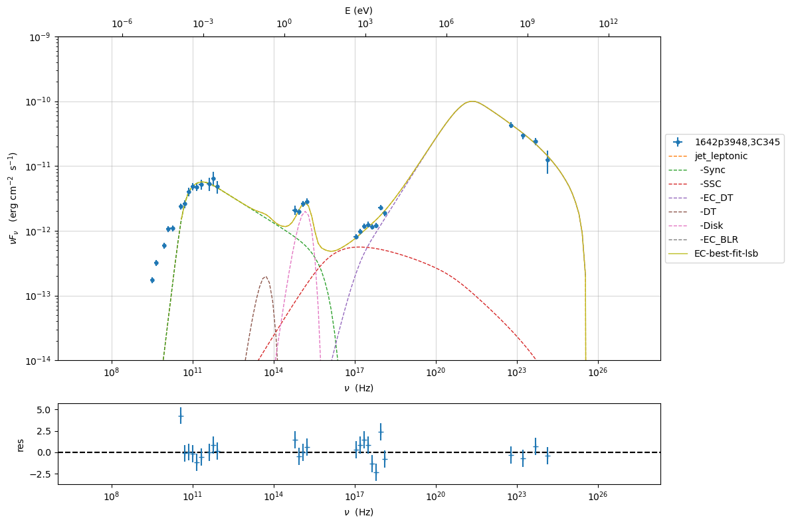
jet.energetic_report()
| name | type | units | val |
|---|---|---|---|
| BulkLorentzFactor | jet-bulk-factor | 1.000000e+01 | |
| U_e | Energy dens. blob rest. frame | erg / cm3 | 2.751350e-03 |
| U_p_cold | Energy dens. blob rest. frame | erg / cm3 | 2.482029e-01 |
| U_B | Energy dens. blob rest. frame | erg / cm3 | 1.250538e-04 |
| U_Synch | Energy dens. blob rest. frame | erg / cm3 | 7.917462e-06 |
| U_Synch_DRF | Energy dens. disk rest. frame | erg / cm3 | 7.944161e-01 |
| U_Disk | Energy dens. blob rest. frame | erg / cm3 | 2.280631e-06 |
| U_BLR | Energy dens. blob rest. frame | erg / cm3 | 1.732630e-07 |
| U_DT | Energy dens. blob rest. frame | erg / cm3 | 1.331679e-03 |
| U_Corona | Energy dens. blob rest. frame | erg / cm3 | 0.000000e+00 |
| U_CMB | Energy dens. blob rest. frame | erg / cm3 | 0.000000e+00 |
| U_Star | Energy dens. blob rest. frame | erg / cm3 | 0.000000e+00 |
| U_Disk_DRF | Energy dens. disk rest. frame | erg / cm3 | 7.638690e-04 |
| U_BLR_DRF | Energy dens. disk rest. frame | erg / cm3 | 4.448026e-05 |
| U_DT_DRF | Energy dens. disk rest. frame | erg / cm3 | 6.675126e-06 |
| U_Corona_DRF | Energy dens. disk rest. frame | erg / cm3 | 0.000000e+00 |
| U_CMB_DRF | Energy dens. disk rest. frame | erg / cm3 | 0.000000e+00 |
| U_Star_DRF | Energy dens. disk rest. frame | erg / cm3 | 0.000000e+00 |
| U_seed_tot | Energy dens. blob rest. frame | erg / cm3 | 1.342051e-03 |
| L_Sync_rf | Lum. blob rest. frame. | erg / s | 4.759457e+41 |
| L_SSC_rf | Lum. blob rest. frame. | erg / s | 9.154878e+40 |
| L_EC_Disk_rf | Lum. blob rest. frame. | erg / s | 0.000000e+00 |
| L_EC_BLR_rf | Lum. blob rest. frame. | erg / s | 8.232092e+38 |
| L_EC_DT_rf | Lum. blob rest. frame. | erg / s | 5.784949e+42 |
| L_EC_Corona_rf | Lum. blob rest. frame. | erg / s | 0.000000e+00 |
| L_EC_CMB_rf | Lum. blob rest. frame. | erg / s | 0.000000e+00 |
| L_EC_Star_rf | Lum. blob rest. frame. | erg / s | 0.000000e+00 |
| jet_L_Sync | jet Lum. | erg / s | 1.183900e+43 |
| jet_L_SSC | jet Lum. | erg / s | 2.277247e+42 |
| jet_L_EC_Disk | jet Lum. | erg / s | 0.000000e+00 |
| jet_L_EC_BLR | jet Lum. | erg / s | 2.047707e+40 |
| jet_L_EC_DT | jet Lum. | erg / s | 1.438988e+44 |
| jet_L_EC_Corona | jet Lum. | erg / s | 0.000000e+00 |
| jet_L_EC_Star | jet Lum. | erg / s | 0.000000e+00 |
| jet_L_EC_CMB | jet Lum. | erg / s | 0.000000e+00 |
| jet_L_pp_gamma | jet Lum. | erg / s | 0.000000e+00 |
| jet_L_rad | jet Lum. | erg / s | 1.580355e+44 |
| jet_L_kin | jet Lum. | erg / s | 3.752525e+47 |
| jet_L_tot | jet Lum. | erg / s | 3.755975e+47 |
| jet_L_e | jet Lum. | erg / s | 4.114101e+45 |
| jet_L_B | jet Lum. | erg / s | 1.869932e+44 |
| jet_L_p_cold | jet Lum. | erg / s | 3.711384e+47 |
| NH_cold_to_rel_e | cold_p_to_rel_e_ratio | 1.000000e+00 |
best_fit.save_report('EC-best-fit-minuit.pkl')
model_minimizer.save_model('EC_model_minimizer_minuit.pkl')
fit_model.save_model('EC_fit_model_minuit.pkl')
MCMC sampling#
Note
Please, read the introduction and the caveats for the Bayesian model fitting to understand the MCMC sampler workflow.
from jetset.mcmc import McmcSampler
from jetset.minimizer import ModelMinimizer
model_minimizer_minuit = ModelMinimizer.load_model('EC_model_minimizer_minuit.pkl')
mcmc=McmcSampler(model_minimizer_minuit)
Note
By default, the MCMC sampler will inherit nu_fit_start, nu_fit_stop,
and use_UL from the model_minimizer object. To change these values,
please read the introduction and the caveats for the Bayesian model fitting
Important
Starting from v1.4.0, the McmcSampler class does not use anymore labels and use_labels_dict, to select the parameters used by the sampler. Starting from this version, all the free parameters will be sampled. To select sampled parameters, please free/freeze them.
You can inspect the mcmc parameters using:
mcmc.sampler_parameters
| model name | name | val | log | bestfit mcmc | q16 | q50 | q84 | mcmc bound min | mcmc bound max | frozen |
|---|---|---|---|---|---|---|---|---|---|---|
| str12 | str22 | float64 | bool | float64 | float64 | float64 | float64 | float64 | float64 | bool |
| jet_leptonic | gmin | 2.031418e+00 | False | 2.031418e+00 | -- | -- | -- | 2.000000e+00 | 1.000000e+02 | False |
| jet_leptonic | gmax | 4.613736e+04 | False | 4.613736e+04 | -- | -- | -- | 1.000000e+04 | 1.000000e+05 | False |
| jet_leptonic | N | 1.651080e+02 | False | 1.651080e+02 | -- | -- | -- | 0.000000e+00 | -- | False |
| jet_leptonic | gamma_break | 2.370238e+02 | False | 2.370238e+02 | -- | -- | -- | 1.000000e+02 | 5.000000e+02 | False |
| jet_leptonic | p | 1.674564e+00 | False | 1.674564e+00 | -- | -- | -- | 1.000000e+00 | 2.500000e+00 | False |
| jet_leptonic | p_1 | 3.521923e+00 | False | 3.521923e+00 | -- | -- | -- | 3.000000e+00 | 4.000000e+00 | False |
| jet_leptonic | T_DT | 9.676089e+02 | False | 9.676089e+02 | -- | -- | -- | 1.000000e+02 | 1.000000e+03 | False |
| jet_leptonic | T_Disk | 2.906549e+04 | False | 2.906549e+04 | -- | -- | -- | 1.000000e+04 | 1.000000e+05 | False |
| jet_leptonic | R_H(M) | 3.812604e+18 | False | 3.812604e+18 | -- | -- | -- | 5.000000e+17 | 5.000000e+19 | False |
| ... | ... | ... | ... | ... | ... | ... | ... | ... | ... | ... |
| jet_leptonic | *R_DT(D,L_Disk) | 1.292162e+19 | False | -- | -- | -- | -- | 0.000000e+00 | -- | True |
| jet_leptonic | tau_DT | 1.000000e-01 | False | -- | -- | -- | -- | 0.000000e+00 | 1.000000e+00 | True |
| jet_leptonic | tau_BLR | 1.000000e-01 | False | -- | -- | -- | -- | 0.000000e+00 | 1.000000e+00 | True |
| jet_leptonic | *R_BLR_in(D,L_Disk) | 1.938243e+17 | False | -- | -- | -- | -- | 0.000000e+00 | -- | True |
| jet_leptonic | *R_BLR_out(D,R_BLR_in) | 2.132067e+17 | False | -- | -- | -- | -- | 0.000000e+00 | -- | True |
| jet_leptonic | L_Disk(M) | 4.174205e+45 | False | -- | -- | -- | -- | 0.000000e+00 | -- | True |
| jet_leptonic | *R(D,theta_open) | 3.994574e+17 | False | -- | -- | -- | -- | 1.000000e+03 | 1.000000e+30 | True |
| jet_leptonic | NH_cold_to_rel_e | 1.000000e+00 | False | -- | -- | -- | -- | 0.000000e+00 | -- | True |
| jet_leptonic | theta | 2.000000e+00 | False | -- | -- | -- | -- | 0.000000e+00 | 9.000000e+01 | True |
| jet_leptonic | z_cosm | 5.930000e-01 | False | -- | -- | -- | -- | 0.000000e+00 | -- | True |
If you want to exclude or include parameters from the samplers just freeze/free them.
mcmc.model.jet_leptonic.parameters.freeze_all()
mcmc.model.jet_leptonic.parameters.N.free()
mcmc.model.jet_leptonic.parameters.B.free()
mcmc.model.jet_leptonic.parameters.BulkFactor.free()
mcmc.model.jet_leptonic.parameters.p_1.free()
mcmc.model.jet_leptonic.parameters.gamma_break.free()
mcmc.model.jet_leptonic.parameters.p.free()
mcmc.set_bounds(bound=5.0,bound_rel=True)
par: N ref value: 165.10795158714464 mcmc bounds: [0, np.float64(990.6477095228678)]
par: gamma_break ref value: 237.02380840928674 mcmc bounds: [100, 500]
par: p ref value: 1.6745642482679277 mcmc bounds: [1, 2.5]
par: p_1 ref value: 3.521923066252411 mcmc bounds: [3, 4]
par: B ref value: 0.05606196161299937 mcmc bounds: [0.01, np.float64(0.3363717696779962)]
par: BulkFactor ref value: 10.000000055874951 mcmc bounds: [10, 30]
Or, you can set per-parameter bounds as follows, passing the actual bound for each parameter.
You can set different bounds for all the free parameters with the
instruction below. In case you want to preserve the fit_range
defined in the frequentist minimizer you can pass
preserve_fit_range=True
Note
Please, read the introduction and the caveats for the Bayesian model fitting to understand better the bound settings.
mcmc.set_bounds(bound=5.0,bound_rel=True)
par: N ref value: 165.10795158714464 mcmc bounds: [0, np.float64(990.6477095228678)]
par: gamma_break ref value: 237.02380840928674 mcmc bounds: [100, 500]
par: p ref value: 1.6745642482679277 mcmc bounds: [1, 2.5]
par: p_1 ref value: 3.521923066252411 mcmc bounds: [3, 4]
par: B ref value: 0.05606196161299937 mcmc bounds: [0.01, np.float64(0.3363717696779962)]
par: BulkFactor ref value: 10.000000055874951 mcmc bounds: [10, 30]
Or, you can set per-parameter bounds as follows, passing the actual bound for each parameter.
mcmc.set_bounds(comp_name='jet_leptonic',par_name='N',par_bounds=[1E-3,10000])
par: N ref value: 165.10795158714464 mcmc bounds: [0.001, 10000]
mcmc.sampler_parameters
| model name | name | val | log | bestfit mcmc | q16 | q50 | q84 | mcmc bound min | mcmc bound max | frozen |
|---|---|---|---|---|---|---|---|---|---|---|
| str12 | str22 | float64 | bool | float64 | float64 | float64 | float64 | float64 | float64 | bool |
| jet_leptonic | N | 1.651080e+02 | False | 1.651080e+02 | -- | -- | -- | 1.000000e-03 | 1.000000e+04 | False |
| jet_leptonic | gamma_break | 2.370238e+02 | False | 2.370238e+02 | -- | -- | -- | 1.000000e+02 | 5.000000e+02 | False |
| jet_leptonic | p | 1.674564e+00 | False | 1.674564e+00 | -- | -- | -- | 1.000000e+00 | 2.500000e+00 | False |
| jet_leptonic | p_1 | 3.521923e+00 | False | 3.521923e+00 | -- | -- | -- | 3.000000e+00 | 4.000000e+00 | False |
| jet_leptonic | B | 5.606196e-02 | False | 5.606196e-02 | -- | -- | -- | 1.000000e-02 | 3.363718e-01 | False |
| jet_leptonic | BulkFactor | 1.000000e+01 | False | 1.000000e+01 | -- | -- | -- | 1.000000e+01 | 3.000000e+01 | False |
| jet_leptonic | gmin | 2.031418e+00 | False | -- | -- | -- | -- | 2.000000e+00 | 1.000000e+02 | True |
| jet_leptonic | gmax | 4.613736e+04 | False | -- | -- | -- | -- | 1.000000e+04 | 1.000000e+05 | True |
| jet_leptonic | T_DT | 9.676089e+02 | False | -- | -- | -- | -- | 1.000000e+02 | 1.000000e+03 | True |
| ... | ... | ... | ... | ... | ... | ... | ... | ... | ... | ... |
| jet_leptonic | *R_BLR_in(D,L_Disk) | 1.938243e+17 | False | -- | -- | -- | -- | 0.000000e+00 | -- | True |
| jet_leptonic | *R_BLR_out(D,R_BLR_in) | 2.132067e+17 | False | -- | -- | -- | -- | 0.000000e+00 | -- | True |
| jet_leptonic | L_Disk(M) | 4.174205e+45 | False | -- | -- | -- | -- | 0.000000e+00 | -- | True |
| jet_leptonic | T_Disk | 2.906549e+04 | False | -- | -- | -- | -- | 1.000000e+04 | 1.000000e+05 | True |
| jet_leptonic | *R(D,theta_open) | 3.994574e+17 | False | -- | -- | -- | -- | 1.000000e+03 | 1.000000e+30 | True |
| jet_leptonic | R_H(M) | 3.812604e+18 | False | -- | -- | -- | -- | 5.000000e+17 | 5.000000e+19 | True |
| jet_leptonic | NH_cold_to_rel_e | 1.000000e+00 | False | -- | -- | -- | -- | 0.000000e+00 | -- | True |
| jet_leptonic | theta | 2.000000e+00 | False | -- | -- | -- | -- | 0.000000e+00 | 9.000000e+01 | True |
| jet_leptonic | z_cosm | 5.930000e-01 | False | -- | -- | -- | -- | 0.000000e+00 | -- | True |
| jet_leptonic | theta_open(M) | 5.981220e+00 | False | -- | -- | -- | -- | 4.000000e+00 | 6.000000e+00 | True |
mcmc.run_sampler(nwalkers=20, burnin=50,steps=500,progress='notebook')
mcmc run starting
0%| | 0/500 [00:00<?, ?it/s]
mcmc run done, with 1 threads took 34.38 seconds
----------------------------
MCMC best fit solution
comp: jet_leptonic par: N mcmc best fit val: 153.9730247819026 quantiles(0.16,0.5,0.84): [138.49565166 153.09587276 168.32881587]
comp: jet_leptonic par: gamma_break mcmc best fit val: 251.76171515213795 quantiles(0.16,0.5,0.84): [220.15455061 251.7189551 295.30343091]
comp: jet_leptonic par: p mcmc best fit val: 1.6737188216549843 quantiles(0.16,0.5,0.84): [1.61155969 1.67252036 1.74363111]
comp: jet_leptonic par: p_1 mcmc best fit val: 3.536263217386051 quantiles(0.16,0.5,0.84): [3.49880301 3.5586967 3.63070637]
comp: jet_leptonic par: B mcmc best fit val: 0.05624451442433876 quantiles(0.16,0.5,0.84): [0.05267694 0.05570272 0.05896786]
comp: jet_leptonic par: BulkFactor mcmc best fit val: 10.045611005319898 quantiles(0.16,0.5,0.84): [10.03991189 10.11718767 10.29508995]
----------------------------
Showing the MCMC parameters. Now MCMC bestfit values are updated to the best-fit MCMC solution
mcmc.sampler_parameters
| model name | name | val | log | bestfit mcmc | q16 | q50 | q84 | mcmc bound min | mcmc bound max | frozen |
|---|---|---|---|---|---|---|---|---|---|---|
| str12 | str22 | float64 | bool | float64 | float64 | float64 | float64 | float64 | float64 | bool |
| jet_leptonic | N | 1.539730e+02 | False | 1.539730e+02 | 1.384957e+02 | 1.530959e+02 | 1.683288e+02 | 1.000000e-03 | 1.000000e+04 | False |
| jet_leptonic | gamma_break | 2.517617e+02 | False | 2.517617e+02 | 2.201546e+02 | 2.517190e+02 | 2.953034e+02 | 1.000000e+02 | 5.000000e+02 | False |
| jet_leptonic | p | 1.673719e+00 | False | 1.673719e+00 | 1.611560e+00 | 1.672520e+00 | 1.743631e+00 | 1.000000e+00 | 2.500000e+00 | False |
| jet_leptonic | p_1 | 3.536263e+00 | False | 3.536263e+00 | 3.498803e+00 | 3.558697e+00 | 3.630706e+00 | 3.000000e+00 | 4.000000e+00 | False |
| jet_leptonic | B | 5.624451e-02 | False | 5.624451e-02 | 5.267694e-02 | 5.570272e-02 | 5.896786e-02 | 1.000000e-02 | 3.363718e-01 | False |
| jet_leptonic | BulkFactor | 1.004561e+01 | False | 1.004561e+01 | 1.003991e+01 | 1.011719e+01 | 1.029509e+01 | 1.000000e+01 | 3.000000e+01 | False |
| jet_leptonic | gmin | 2.031418e+00 | False | -- | -- | -- | -- | 2.000000e+00 | 1.000000e+02 | True |
| jet_leptonic | gmax | 4.613736e+04 | False | -- | -- | -- | -- | 1.000000e+04 | 1.000000e+05 | True |
| jet_leptonic | T_DT | 9.676089e+02 | False | -- | -- | -- | -- | 1.000000e+02 | 1.000000e+03 | True |
| ... | ... | ... | ... | ... | ... | ... | ... | ... | ... | ... |
| jet_leptonic | *R_BLR_in(D,L_Disk) | 1.938243e+17 | False | -- | -- | -- | -- | 0.000000e+00 | -- | True |
| jet_leptonic | *R_BLR_out(D,R_BLR_in) | 2.132067e+17 | False | -- | -- | -- | -- | 0.000000e+00 | -- | True |
| jet_leptonic | L_Disk(M) | 4.174205e+45 | False | -- | -- | -- | -- | 0.000000e+00 | -- | True |
| jet_leptonic | T_Disk | 2.906549e+04 | False | -- | -- | -- | -- | 1.000000e+04 | 1.000000e+05 | True |
| jet_leptonic | *R(D,theta_open) | 3.994574e+17 | False | -- | -- | -- | -- | 1.000000e+03 | 1.000000e+30 | True |
| jet_leptonic | R_H(M) | 3.812604e+18 | False | -- | -- | -- | -- | 5.000000e+17 | 5.000000e+19 | True |
| jet_leptonic | NH_cold_to_rel_e | 1.000000e+00 | False | -- | -- | -- | -- | 0.000000e+00 | -- | True |
| jet_leptonic | theta | 2.000000e+00 | False | -- | -- | -- | -- | 0.000000e+00 | 9.000000e+01 | True |
| jet_leptonic | z_cosm | 5.930000e-01 | False | -- | -- | -- | -- | 0.000000e+00 | -- | True |
| jet_leptonic | theta_open(M) | 5.981220e+00 | False | -- | -- | -- | -- | 4.000000e+00 | 6.000000e+00 | True |
post-run tuning of the burnin#
We plot the chains, before and after, tuning the burnin (using autocorrelation time of emcee).
p=mcmc.plot_chain()
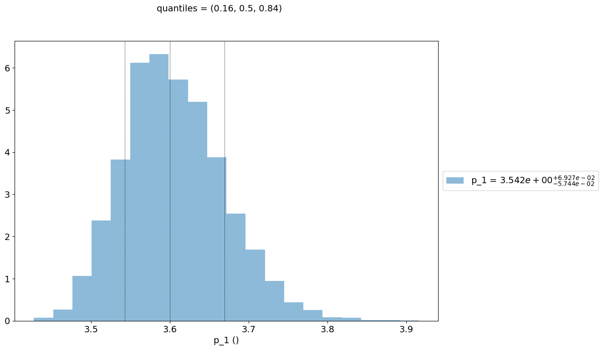
mcmc.tune_burnin(tau_coeff=2)
----------------------------
MCMC best fit solution
comp: jet_leptonic par: N mcmc best fit val: 153.9730247819026 quantiles(0.16,0.5,0.84): [138.32018979 152.38889727 167.81331483]
comp: jet_leptonic par: gamma_break mcmc best fit val: 251.76171515213795 quantiles(0.16,0.5,0.84): [219.23222755 255.01479431 296.97692062]
comp: jet_leptonic par: p mcmc best fit val: 1.6737188216549843 quantiles(0.16,0.5,0.84): [1.61025322 1.67424553 1.74701918]
comp: jet_leptonic par: p_1 mcmc best fit val: 3.536263217386051 quantiles(0.16,0.5,0.84): [3.49838386 3.56016185 3.63272082]
comp: jet_leptonic par: B mcmc best fit val: 0.05624451442433876 quantiles(0.16,0.5,0.84): [0.05262982 0.05568803 0.05908654]
comp: jet_leptonic par: BulkFactor mcmc best fit val: 10.045611005319898 quantiles(0.16,0.5,0.84): [10.04276161 10.12057393 10.29492702]
----------------------------
p=mcmc.plot_chain()
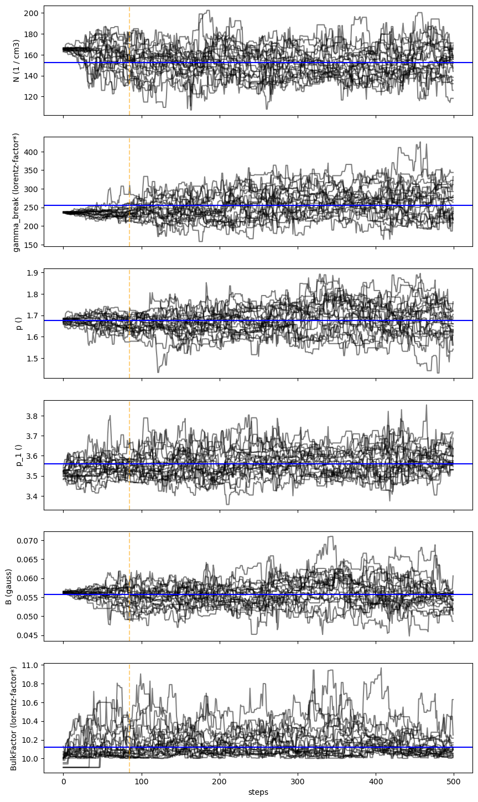
The updated burnin value has increased compared to the initial one, now the chain samples a parameter space closer to the convergence.
plotting the posterior corner plot#
To have a better rendering on the scatter plot, we redefine the plot labels
mcmc.set_plot_label('N',r'$N$',comp_name='jet_leptonic')
mcmc.set_plot_label('B',r'$B$',comp_name='jet_leptonic')
mcmc.set_plot_label('p',r'$p$',comp_name='jet_leptonic')
mcmc.set_plot_label('p_1',r'$p_1$',comp_name='jet_leptonic')
mcmc.set_plot_label('gamma_break',r'$\gamma_{\rm break}$',comp_name='jet_leptonic')
mcmc.set_plot_label('BulkFactor',r'$\Gamma$',comp_name='jet_leptonic')
The code below lets you tune the output.
mpl.rcParams['figure.dpi']: increase it to get better definition.title_fmt='.2E': Python format with 2 significant digits in scientific notation.title_kwargs=dict(fontsize=12): change the title font size.
Per-component corner plot
import matplotlib as mpl
mpl.rcParams['figure.dpi'] = 80
f=mcmc.corner_plot(quantiles=(0.16, 0.5, 0.84),title_kwargs=dict(fontsize=12),title_fmt=".2E",use_math_text=True)
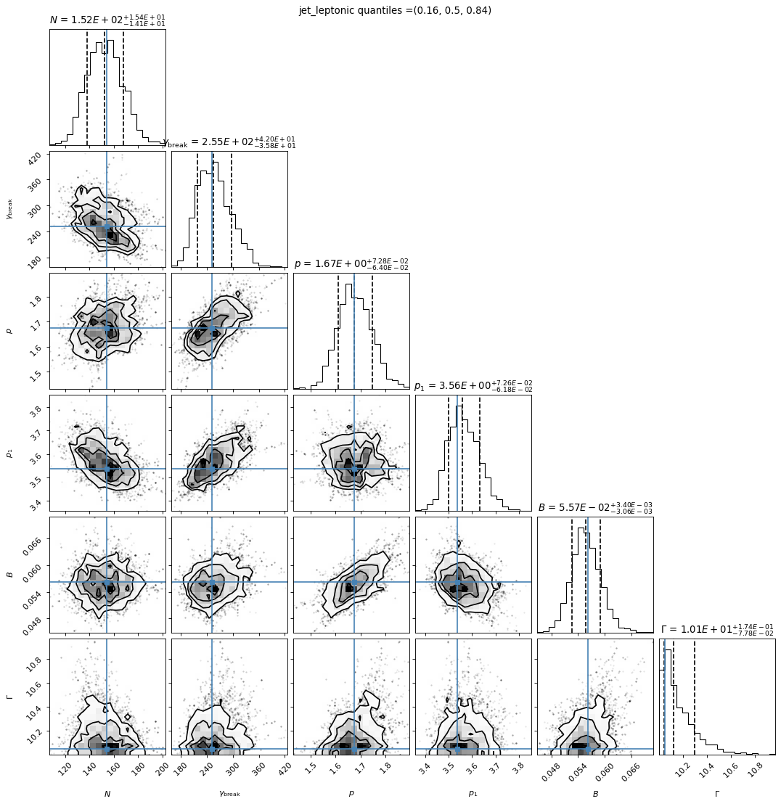
plotting the model#
To plot the sampled model range against the input mcmc best-fit model
mpl.rcParams['figure.dpi'] = 80
p=mcmc.plot_model(sed_data=sed_data,size=500)
p.setlim(y_min=1E-14,x_min=1E6,x_max=2E28)
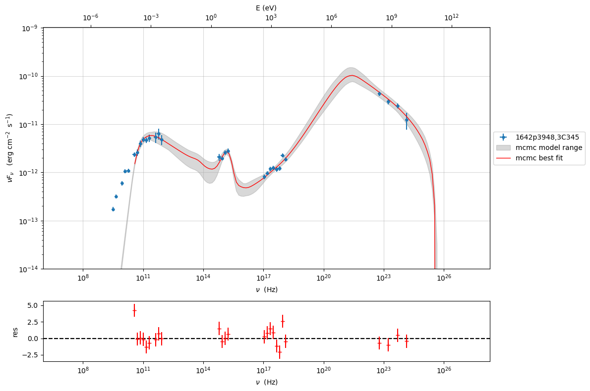
To plot the mcmc best-fit model providing quantiles. The size parameter defines the number of samples to use to extract the quantiles. I am using a size equal to the number of steps
mpl.rcParams['figure.dpi'] = 80
p=mcmc.plot_model(sed_data=sed_data,size=500,quantiles=[0.05,0.95])
p.setlim(y_min=1E-14,x_min=1E6,x_max=2E28)
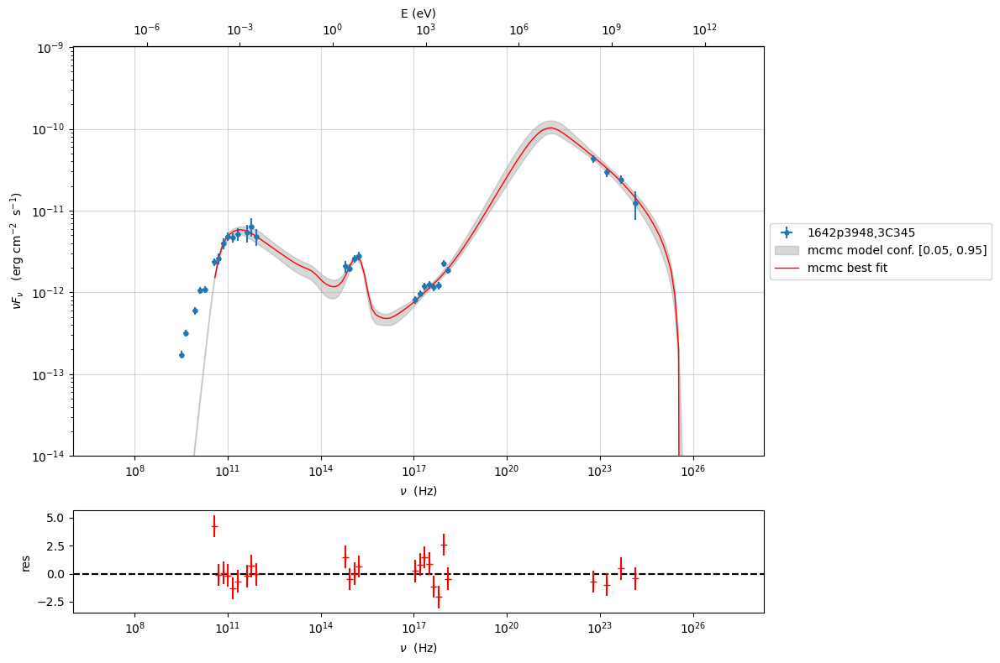
If you want to plot also the model components, pass the argument
plot_components=True
mpl.rcParams['figure.dpi'] = 80
p=mcmc.plot_model(sed_data=sed_data,size=500,quantiles=[0.05,0.95],plot_components=True)
p.setlim(y_min=1E-14,x_min=1E6,x_max=2E28)
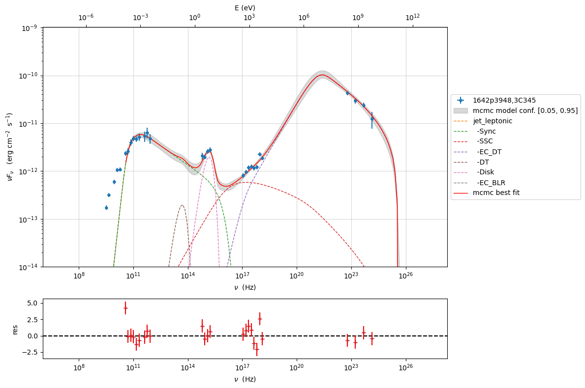
To plot the frequentist best-fit model range, providing quantiles,
provide (plot_mcmc_best_fit_model=False)
mpl.rcParams['figure.dpi'] = 100
p=mcmc.plot_model(sed_data=sed_data,size=500,quantiles=[0.05,0.95], plot_mcmc_best_fit_model=False,plot_components=True)
p.setlim(y_min=1E-14,x_min=1E6,x_max=2E28)
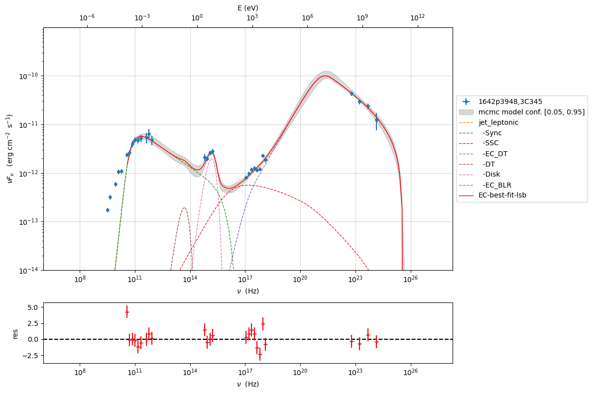
plotting chains and individual posteriors#
import matplotlib.pylab as plt
mpl.rcParams['figure.dpi'] = 80
f=mcmc.plot_chain(par_name='p',log_plot=False)
plt.tight_layout()
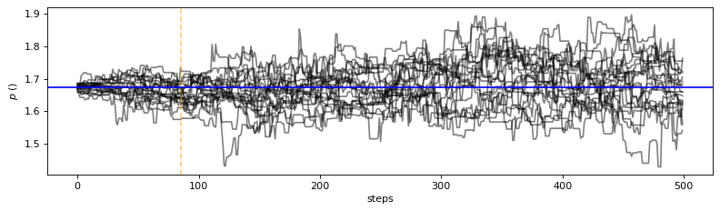
mpl.rcParams['figure.dpi'] = 80
f=mcmc.plot_chain(log_plot=False)
plt.tight_layout()
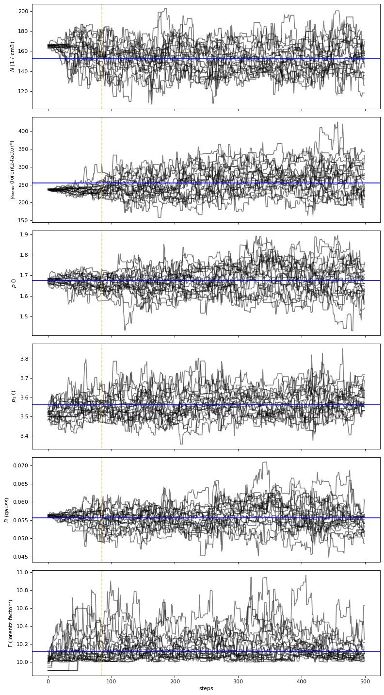
Save and reuse MCMC#
mcmc.save('mcmc_sampler.pkl')
from jetset.mcmc import McmcSampler
from jetset.data_loader import ObsData
from jetset.plot_sedfit import PlotSED
from jetset.test_data_helper import test_SEDs
sed_data=ObsData.load('3C454_data.pkl')
ms=McmcSampler.load('mcmc_sampler.pkl')
ms.model.set_nu_grid(1E6,1E30,200)
p=ms.plot_model(sed_data=sed_data,fit_range=[3E10, 1E29],size=100)
p.setlim(y_min=1E-13,x_min=1E6,x_max=2E28)
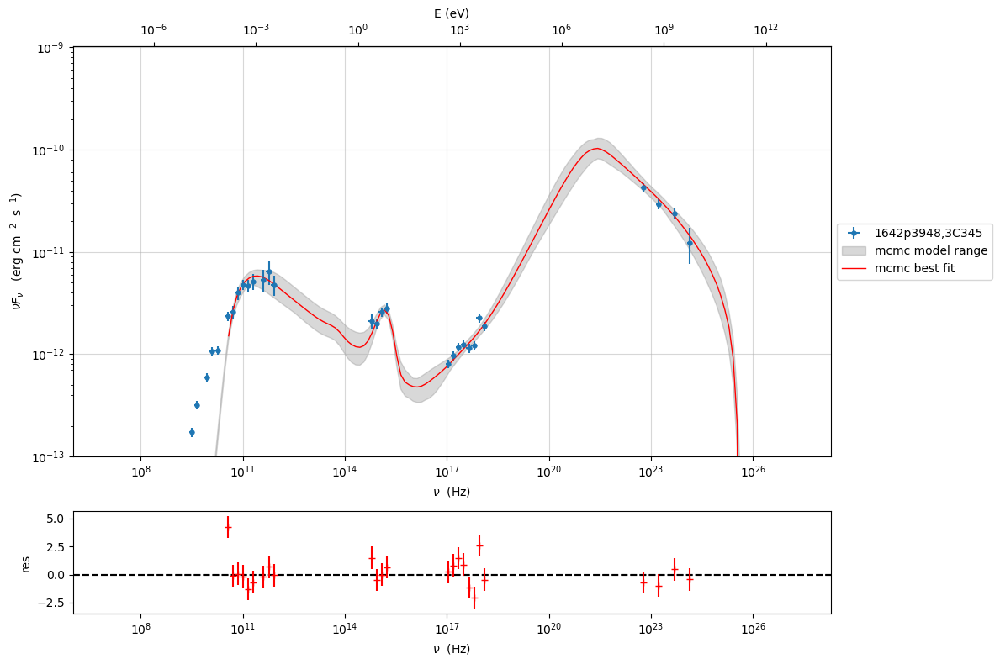
p=ms.plot_model(sed_data=sed_data,fit_range=[3E10, 1E29],size=100,quantiles=[0.05,0.95])
p.setlim(y_min=1E-13,x_min=1E6,x_max=2E28)
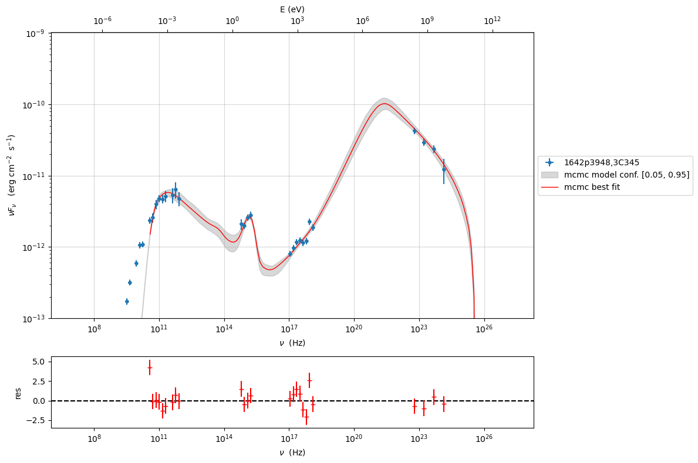
f=ms.plot_par('p_1',log_plot=False)
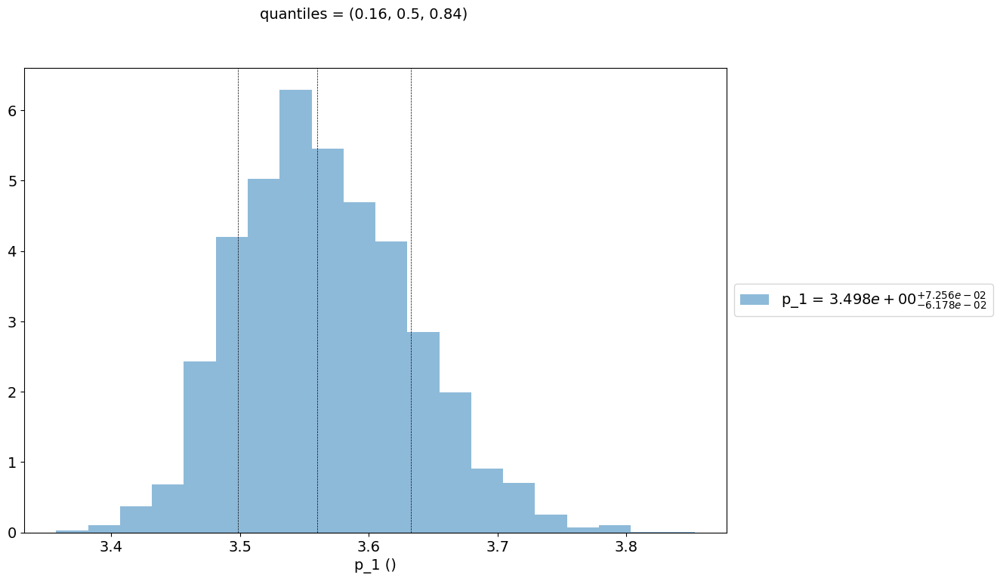